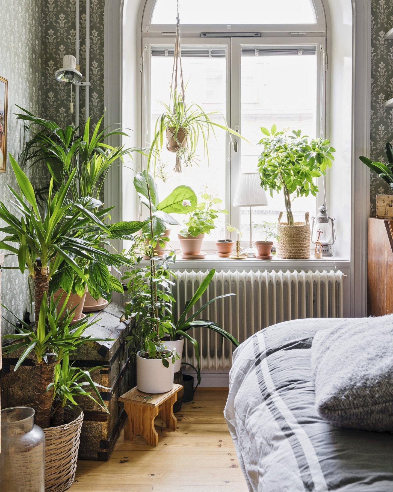

Community Focus and Problem Definition
COMMUNITY
Young Urban Plant Parents
They live in small apartments, are out for long hours, and bring plants home to make the space feel alive.
PROBLEM
Plants Can't Say What They Need
Watering becomes guesswork.
“I just try to feel the soil and try not to overwater them.”


Source Phillips & Schulz (2021), Greening Home, Caring for Plants Indoors
Summary of Research and Discovery
MARKET RESEARCH

Automation
Reduces maintenance effort

Monitoring
Provides environmental data
Image sources RainPoint automatic watering timer; XinFuture WiFi soil moisture and temperature sensor (Walmart)
WHAT'S MISSING
Both focus on managing plants, not on the experience of understanding them.
KEY DISCOVERY
Plant care can be more than managing conditions. It can also be about understanding and caring for living things.
Live Demo
Watch the light, listen to the sound, and guess how the plant feels and what it needs.
- Dry
- Good
- Just watered
- Soggy